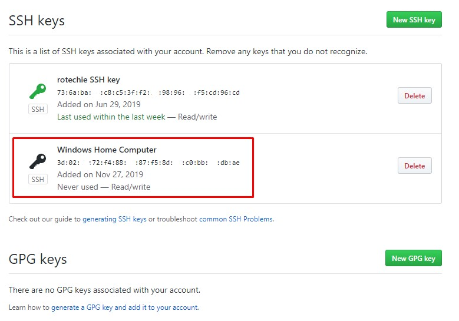

SSH (Secure Shell) keys are an access credential that is used in the SSH protocol.
An SSH key is either one of two files used in an authentication method known as SSH public key authentication. In this authentication method, one file (known as the private key) is typically held at the client side and the other file (known as the public key) is stored at the server side. Github stores the public key in this case and the user stores the private key.
In order to set up an SSH connection, you must first generate a local key. This is done using a terminal. In this case, we are working with Git Bash.
Type the following in your terminal:
ssh-keygen
The following will appear:
$ ssh-keygen
Generating public/private rsa key pair.
Enter file in which to save the key (/c/Users/username/.ssh/id_rsa):
If you would like to opt for the default file location, hit Enter.
Enter a password or hit Enter again if you do not wish to use a password. You will need to reenter it for validation.
Your key has now been generated.
Navigate to: C:\Users\eneaa\.ssh
Open the file called: id_rsa
The key is quite long so ensure you copy all of it. The file/key you will copy it from should look like this:
Navigate to your github account settings. Select the SSH and GPG keys option.
Enter your key's name and paste the key in the appropriate box.
Hit the green Add SSH Key button
Your key has been added to GitHub and you should now be able to push to master
